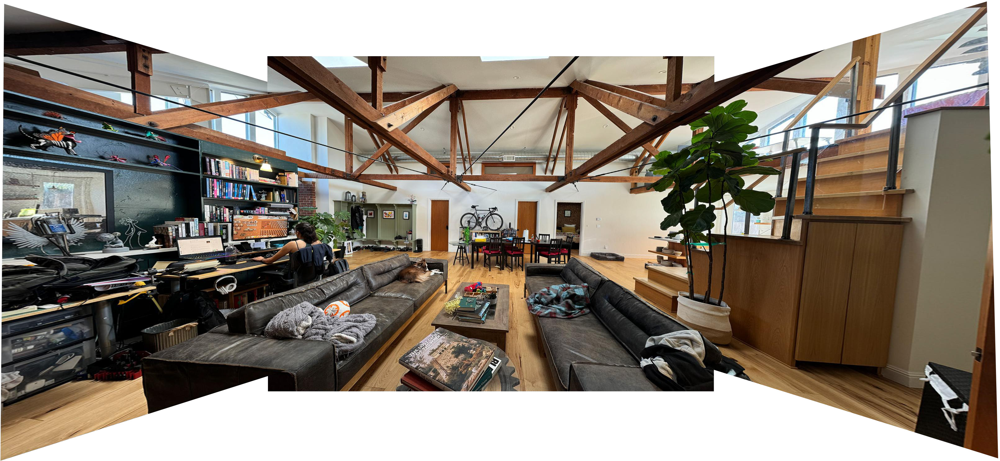
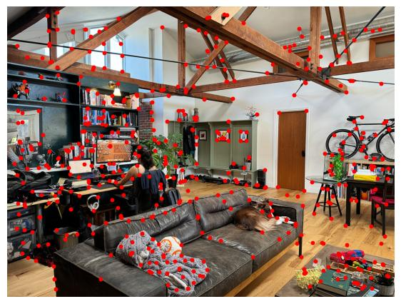
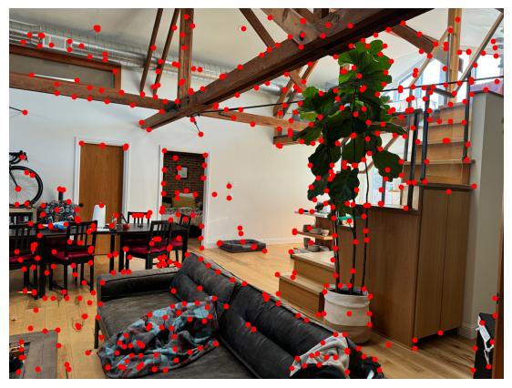
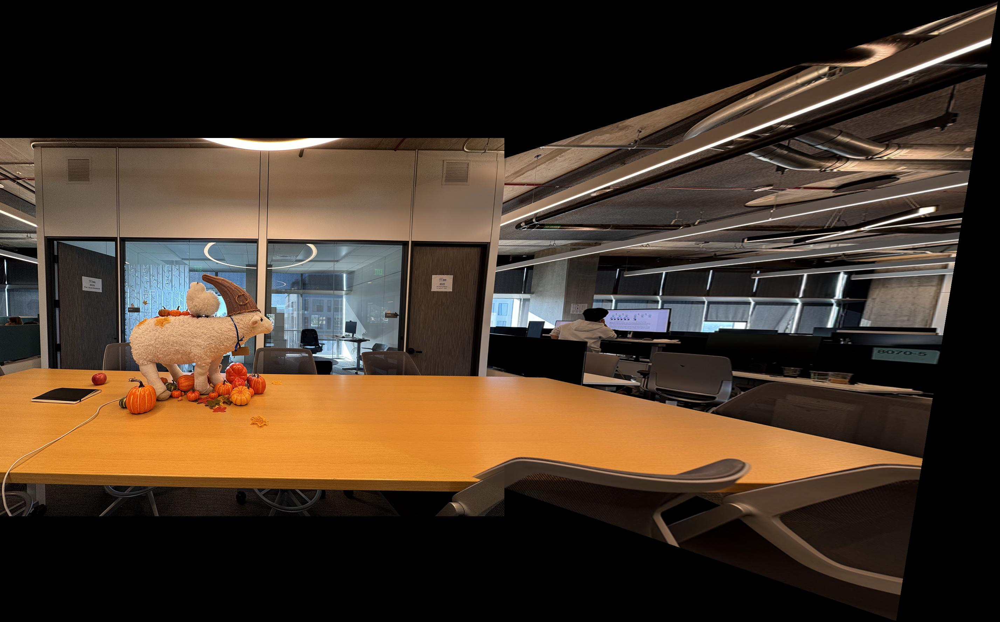

CS 280A Project 4B: Feature Matching for Autostitching
by Alonso Martinez

In Project 4A we manually found
correspondence points between two images, in order to warp the perspective between them and create a mosaic. Now
let's not waste time like chumps and automatically compute the correspondance as well!
Part 1 - Detect corner features in an image
We first begin by computing the Harris corners of a portait of Harris:
Then we filter those interest points by the weight of the 'h' scores and take
the top 1k scores
The high degree of clustering causes issues with alignment because the
potential overlap in the image might be a small corner, therefore we use Adaptive Non-Maximal
Suppression (ANMS) technique to find more uniform interest points. (Number of
interest points reduced for illustrative purposes)
ANMS picks important points in a picture by giving each one a “radius” that measures how far it
is from stronger points nearby. Only points with the largest radii are kept, which means we end up with the
strongest points that are also spread out, making it easier to line up or combine multiple pictures.
Part 2- Extracting a Feature Descriptors
For each of the coordinates, we find a window of 40x40 pixels
Subsequently, each one of those 40x40 patches gets scaled to 8x8 patches using
anti-aliasing. This is useful for making the architecture more translation invariant. Here we see
the patches applied back to the original image:
Then we bias/gain-normalize the patches using the following formula:
Which results in the following individual patches:
Landscape mosaic
Luckily this technique is applicable outside the domain of photos of Kamala Harris. Let's
use these technique for the utility of creating a stitched landscape mosaic of a room.
Here are the input images for the mosaic:
Left image
Middle image
Right image
Previous alorithms applied to the room images result in the following correspondances:
Harris Corners ->
Filtered by h ->
Filtered by ANMS
Left image

Middle image
Right image

And their corresponding Feature Descriptors:
Left image:
Middle image:
Right image:
Part 3- Feature Descriptor Matching
Now that we isolated interesting differentiable patches in the image, we can start to
compare them to each other to find correspondances. To find the matches, per patch we calculate the L2 distance
(known as nearest neighbor in Machine Learning) between all pairs of descriptors and store them in a sorted
list. Instead of doing filtering based on global L2 distance between potential correspondances, we use the
method described in Distinctive Image
Features from Scale-Invariant Keypoints. by David Lowe in which we use the ratio of the distances of the
two best Nearest Neighbor matches. If the ratio is less than 0.8, we consider the match to be valid. This in a
way gives "confidence score" in relation to the second best match.
Surprisingly this algorithm finds some corresponsances despite knowing the true alignment would
require perspective warp and that this algorithm is neither rotation nor scale invariant.
Lowe's matching algorithm
(I lowered the point interest count to more easily spot correspondence)
Part 4 - RANSAC
This could still use some improvement so let's use RANSAC to find the best matches. Here are the
much improved results:
RANSAC + Lowe's matching algorithm
(I lowered the point interest count to more easily spot correspondence)
In reality, we use a much higher count of interest points to find a good homography. Here is
first the feature descriptor matching:
Lowe's matching algorithm
Using RANSAC it seems close to 100% matching points!
RANSAC + Lowe's matching algorithm
Final result
We then compute the homography warp per each pair of correspondances and stitch the images
together. For the blending I used the same texture as in project4 which I think gives a nice result:
Result with Automatic alignment
Result with Manual alignment
More Mosaics

Part 5 - Reflection
My favorite part was seeing how powerful RANSAC is even without rotation or scale invariance in
the descriptors. Given we know for sure that to align the images it would require a perspective warp, it's
impressive it works. My suspicion is that this is mostly because of the translation invariance from blurring the
descriptors. Some challenges I had during this project were fighting with the non-standardization of X and Y
order across libraries. Surprisingly figuring out how to expand the canvas and align the multiple stitches was
harder than I thought it would be!.